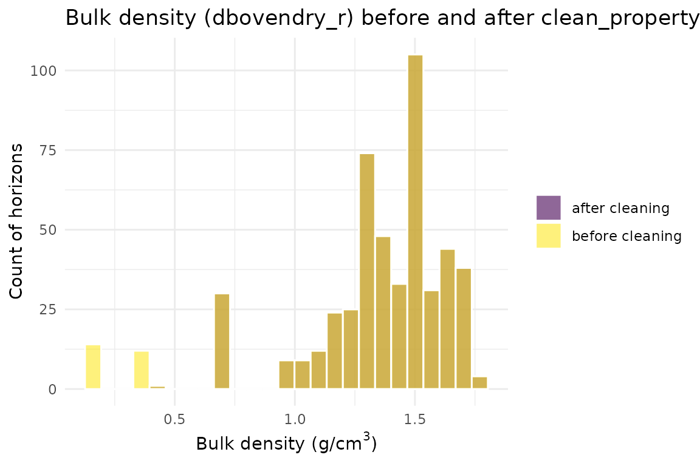
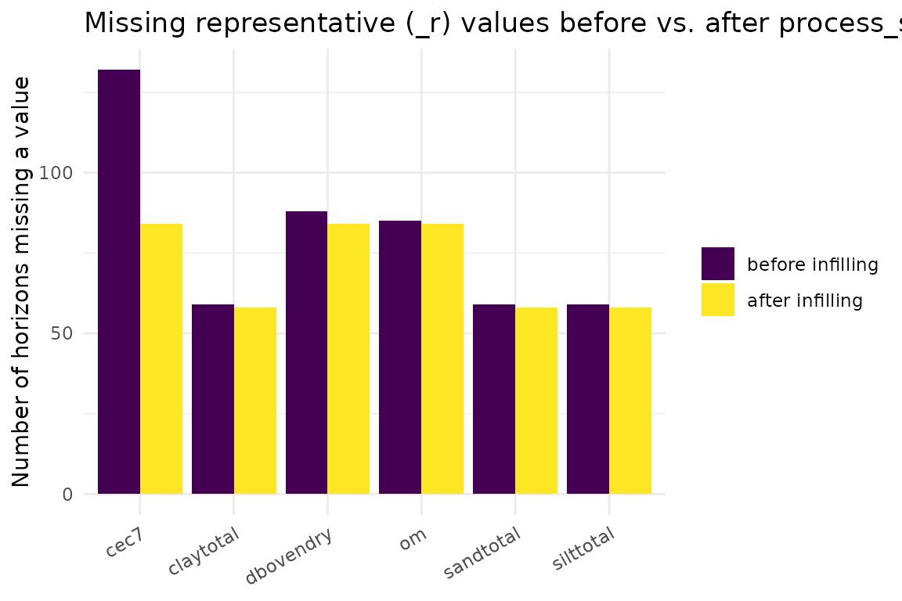

Data Acquisition, Cleaning & Infilling: A Function-by-Function Walkthrough
Source:vignettes/data-acquisition-processing.Rmd
data-acquisition-processing.RmdOverview
getting-started-monte-carlo.Rmd shows soilSIM’s tabular
pipeline end to end, but it collapses “download, clean, and infill
SSURGO data” into two or three function calls. This vignette slows that
part of the pipeline down and walks through the individual
functions underneath, using the same real Amador County, CA SSURGO data,
so you can see what each function actually does to the data and why each
parameter exists:
- Acquisition:
download_ssurgo_tabular()vs. thedownload_and_prepare_ssurgo()convenience wrapper built on top of it - Processing:
process_ssurgo_data()’s two sub-pipelines,process_horizon_data_working_compatible()andprocess_component_data_working_compatible() - Per-property cleaning:
clean_property_data_ssurgo_compatible()(used during processing) vs.clean_property_data()(used during infilling) and their outlier-detection strategies - The infilling family:
infill_soil_property()’s six-strategy recovery hierarchy, the individual strategy functions (horizon_name_property_infill(),infill_missing_property_data(), group fallback), range infilling (infill_property_range_values(),learn_property_ranges(),get_property_contextual_ranges()), the Saxton-Rawls water-retention pedotransfer function (infill_water_retention_saxton_rawls_integrated()), and RFV-specific imputation (impute_rfv_values()) - The pluggable validation-rule config builders:
create_validation_config(),add_range_rule(),add_relationship_rule(),apply_validation_rules(), andsummarize_unsuitable_horizons()
See soilSIM/docs/01_data_acquisition_processing.md for
the full function-level reference this vignette is drawn from.
Step 1: Acquisition - download_ssurgo_tabular()
vs. download_and_prepare_ssurgo()
download_ssurgo_tabular() is the master download
function. Its parameters control every stage of the acquisition:
-
aoi_wkt- the area of interest as a WKT polygon (EPSG:4326) -
properties- which SSURGO base properties to request (default: the 9 core physical/chemical properties); include"rfv"to also request and aggregate rock-fragment volume -
include_restrictions- whether to join restriction/texture-class tables and runadd_restriction_indicators_working(), which is what produces theunsuitable_horizonflag used everywhere downstream -
cache_dir/force_download- optional on-disk caching of the raw SDA query result, keyed by a hash of the AOI + properties + restriction flag -
validate_data- whether to runvalidate_data_quality()on the result before returning it -
verbose- progress logging
# The real call this vignette's cached data came from:
dl <- download_ssurgo_tabular(
aoi_wkt = "POLYGON((-120.5 38.5, -120.4 38.5, -120.4 38.6, -120.5 38.6, -120.5 38.5))",
properties = c("sandtotal", "claytotal", "silttotal", "dbovendry", "ph1to1h2o",
"cec7", "om", "wthirdbar", "wfifteenbar"),
include_restrictions = TRUE,
cache_dir = "cache/ssurgo",
verbose = TRUE
)
names(dl)download_and_prepare_ssurgo() is a thin convenience
wrapper around download_ssurgo_tabular(). It does not add
new acquisition logic - it just fixes two arguments and adds one
post-processing step: it always calls with
include_restrictions = TRUE and
validate_data = TRUE (no way to turn either off), then
depth-filters ssurgo_data to
hzdepb_r <= max_depth and attaches a
preparation_metadata element
(max_depth_applied,
ready_for_simulation = TRUE,
compatible_with_infill_functions = TRUE) so a caller can
tell at a glance that the result is ready for
process_ssurgo_data():
ssurgo_amador <- download_and_prepare_ssurgo(
aoi_wkt = "POLYGON((-120.5 38.5, -120.4 38.5, -120.4 38.6, -120.5 38.6, -120.5 38.5))",
properties = c("sandtotal", "claytotal", "silttotal", "dbovendry", "ph1to1h2o",
"cec7", "om", "wthirdbar", "wfifteenbar"),
max_depth = 150
)
ssurgo_amador$preparation_metadataThis vignette loads the cached real output of that call, so it builds without a live network dependency:
ssurgo_amador <- readRDS(system.file("extdata", "ssurgo_amador.rds", package = "soilSIM"))
raw_data <- ssurgo_amador$ssurgo_data
dim(raw_data)
#> [1] 575 67
length(unique(raw_data$cokey))
#> [1] 116raw_data already has the restriction-indicator columns
add_restriction_indicators_working() adds
(is_cemented, organic_horizon,
is_potentially_restrictive,
unsuitable_horizon, …) - these exist because
download_and_prepare_ssurgo() always requests
restrictions:
grep("restrict|unsuitable|cemented|organic_horizon", names(raw_data), value = TRUE)
#> [1] "restriction_top" "hz_below_restriction"
#> [3] "has_reskind_restriction" "is_cemented"
#> [5] "horizon_suggests_restriction" "organic_horizon"
#> [7] "texture_suggests_restriction" "is_potentially_restrictive"
#> [9] "unsuitable_horizon"
sum(raw_data$unsuitable_horizon)
#> [1] 84Step 2: Processing - process_ssurgo_data()’s two
sub-pipelines
process_ssurgo_data() is the main processing entry
point. Its processing_options list controls seven
independently-togglable steps (detect_unsuitable,
advanced_cleaning, standardize_names,
remove_invalid, calculate_derived,
validate_logic, preserve_compatibility), all
TRUE by default. Internally it runs three sub-pipelines and
stitches their outputs together:
process_horizon_data_working_compatible(),
process_component_data_working_compatible(), and
create_infill_compatible_dataset() (which rebuilds the
combined dataset from raw_data directly, rather than
reusing the other two outputs, which exist mainly for their
statistics).
processed <- process_ssurgo_data(raw_data, max_depth = 150, verbose = FALSE)
names(processed)
#> [1] "processed_data" "horizon_data" "component_data"
#> [4] "processing_metadata" "validation_results" "quality_report"
dim(processed$processed_data)
#> [1] 575 67
process_horizon_data_working_compatible() on its
own
Calling the horizon sub-pipeline directly shows what each of its
steps contributes. With advanced_cleaning = TRUE (the
default), every identified soil-property column is run through
clean_property_data_ssurgo_compatible(), which can turn
additional cells to NA (outliers, out-of-range values) - so
cleaning alone can increase apparent missingness even before
any infilling happens:
horizon_cleaned <- process_horizon_data_working_compatible(
raw_data, advanced_cleaning = TRUE, max_depth = 150, verbose = FALSE
)
horizon_uncleaned <- process_horizon_data_working_compatible(
raw_data, advanced_cleaning = FALSE, max_depth = 150, verbose = FALSE
)
na_counts <- data.frame(
property = c("sandtotal_r", "claytotal_r", "dbovendry_r"),
advanced_cleaning_on = sapply(c("sandtotal_r", "claytotal_r", "dbovendry_r"),
function(col) sum(is.na(horizon_cleaned$processed_data[[col]]))),
advanced_cleaning_off = sapply(c("sandtotal_r", "claytotal_r", "dbovendry_r"),
function(col) sum(is.na(horizon_uncleaned$processed_data[[col]])))
)
na_counts
#> property advanced_cleaning_on advanced_cleaning_off
#> sandtotal_r sandtotal_r 59 59
#> claytotal_r claytotal_r 59 59
#> dbovendry_r dbovendry_r 88 62processing_stats$property_completeness (from
calculate_property_completeness_working()) gives the
fraction of non-missing _r values per property after
processing:
unlist(horizon_cleaned$processing_stats$property_completeness)
#> sandtotal claytotal silttotal dbovendry ph1to1h2o cec7
#> 0.8973913 0.8973913 0.8973913 0.8469565 0.8921739 0.7704348
#> om wthirdbar wfifteenbar awc
#> 0.8521739 0.8921739 0.8921739 0.8921739
process_component_data_working_compatible() on its
own
This is a separate, much smaller sub-pipeline: it selects the
distinct component-level (one row per cokey) columns out of
raw_data, drops invalid rows
(remove_invalid_components_working()), and adds a couple of
derived flags (calculate_component_stats_working()):
component_result <- process_component_data_working_compatible(raw_data, verbose = FALSE)
dim(component_result$processed_data)
#> [1] 116 5
names(component_result$processed_data)
#> [1] "cokey" "compname" "comppct_r"
#> [4] "mukey" "is_major_component"
table(component_result$processed_data$is_major_component)
#>
#> FALSE TRUE
#> 38 78is_major_component (comppct_r >= 15) is
a convenience flag, not a filter - both major and minor components stay
in the output.
Where unsuitable_horizon comes from, and why it matters
everywhere downstream
process_ssurgo_data()’s combined output flags each
horizon as suitable or not, via is_unsuitable(). This flag
is the single gate that every cleaning and infilling function in this
vignette respects: unsuitable horizons (bedrock, cemented pans, organic
layers) are never targets or sources for infilling.
horizon_data <- processed$processed_data
sum(horizon_data$unsuitable_horizon)
#> [1] 84
table(horizon_data$hzname[horizon_data$unsuitable_horizon])
#>
#> Cr H1 H2 H3 H4 Oi
#> 12 2 3 30 11 26summarize_unsuitable_horizons() (covered again in Step
5) is the reporting companion to this flag:
summarize_unsuitable_horizons(horizon_data)
#> $n_unsuitable
#> [1] 84
#>
#> $horizon_types
#> [1] "H1" "H3" "Oi" "Cr" "H4" "H2"Step 3: Per-property cleaning
Two nearly-parallel cleaning functions exist because they serve two
different callers. clean_property_data_ssurgo_compatible()
is what process_ssurgo_data() uses;
clean_property_data() is what
infill_soil_property() uses. Both parse strings, convert
types, and null out non-finite values, but they differ in how
they detect statistical outliers on the _r column:
-
clean_property_data_ssurgo_compatible()usesdetect_outliers(method = "iqr", threshold = 3.0)- a single generic IQR rule applied to every property alike.
-
clean_property_data()usesdetect_statistical_outliers_soil_aware()- property-type-specific rules (e.g. for pH and texture percentages, only physically-impossible values are flagged; other properties fall back to a very conservative IQR factor of 5.0).
Both finish with apply_basic_range_limits(), which
enforces hardcoded SSURGO plausibility bounds (e.g. bulk density
[0.3, 3.0] g/cm^3, pH [2.5, 11.0]) regardless
of the outlier method used.
clean_result <- clean_property_data_ssurgo_compatible(
raw_data, "dbovendry", generate_report = TRUE, verbose = FALSE
)
clean_result$report$outliers_detected$dbovendry_r$n_outliers
#> [1] 26
clean_result$report$type_conversions$dbovendry_r$success_rate
#> [1] 0.8921739Before/after distribution of bulk density (dbovendry_r)
- cleaning removes physically implausible values without touching the
bulk of the distribution:
before_after <- rbind(
data.frame(value = raw_data$dbovendry_r, stage = "before cleaning"),
data.frame(value = clean_result$data$dbovendry_r, stage = "after cleaning")
)
before_after <- before_after[!is.na(before_after$value), ]
ggplot(before_after, aes(x = value, fill = stage)) +
geom_histogram(bins = 25, position = "identity", alpha = 0.6, color = "white") +
scale_fill_viridis_d() +
theme_minimal() +
labs(
title = "Bulk density (dbovendry_r) before and after clean_property_data_ssurgo_compatible()",
x = expression(paste("Bulk density (g/cm"^3, ")")),
y = "Count of horizons",
fill = NULL
)
The infilling-side cleaner, clean_property_data(), is
more conservative for texture/pH-type properties precisely because it
runs before the multi-strategy infilling hierarchy - it would
rather leave a borderline value in place than remove a data point the
recovery strategies could otherwise have used as a source:
clean_result_infill_side <- clean_property_data(
raw_data, "claytotal", generate_report = TRUE, verbose = FALSE
)
# texture properties use the "texture_conservative" rule: only impossible (<0 or >100) values flagged
clean_result_infill_side$report$outliers_detected
#> list()Step 4: The infilling family
The six-strategy recovery hierarchy
infill_soil_property() fills missing _r
(representative) values for a single property using six strategies,
tried in order, only ever using suitable horizons as
sources:
-
Horizon-name matching
(
horizon_name_property_infill()) - within the same group (component), average the property from horizons whose standardized name is similar (similarity > 0.5) to the target horizon’s name. -
Depth-weighted averaging
(
depth_weighted_property_infill()) - within the same group, an inverse-distance-weighted mean of horizons within 20 cm depth. -
Within-component interpolation
(
within_component_property_interpolation()) - linear (approx()-based) interpolation along depth within the same component. -
Cross-component interpolation
(
cross_component_property_interpolation()) - whole-dataset: borrows from other components’ suitable horizons within 15 cm depth tolerance. -
Related-property estimation
(
related_property_estimation()) - whole-dataset: pedological relationships (e.g. texture sums to 100, clay/OM-based CEC). -
Group-mean fallback
(
apply_group_fallback_mean()) - last resort: the group’s own depth-weighted (or plain) mean of suitable horizons.
Each strategy only runs on cells the prior strategy left unfilled,
and every filled cell is tagged in the infill_method audit
column with which strategy filled it and what it used.
infill_soil_property()’s key parameters:
-
df- input data frame (must already haveunsuitable_horizoncomputable / present) -
property_name- a single property base name ("rfv"is special-cased toinfill_rfv_property_integrated()instead of this hierarchy) -
property_config- optional config fromget_default_property_config(); auto-looked-up ifNULL -
max_depth- horizons below this depth are excluded from being infilled (but can still act as interpolation/averaging sources for shallower horizons in the same profile) -
verbose- progress logging
Strategy 1 and the group hierarchy, up close
infill_soil_property() calls
process_property_group() per cokey, which
delegates to infill_missing_property_data() for Strategies
1-3. We can call these directly on one component’s horizons to see what
each strategy actually changes. First, find a component with more than
one horizon and at least one missing claytotal_r value
among its suitable horizons:
Clay happens to have very little missingness left at this point in
the pipeline, so we use CEC (cec7) instead - it has enough
gaps in multi-horizon components to show the hierarchy working:
cleaned_for_infill <- clean_property_data(horizon_data, "cec7", verbose = FALSE)$data
cleaned_for_infill$unsuitable_horizon <- is_unsuitable(cleaned_for_infill, hzname_col = "hzname")
candidate_cokeys <- cleaned_for_infill |>
dplyr::filter(!unsuitable_horizon) |>
dplyr::group_by(cokey) |>
dplyr::filter(dplyr::n() > 1, any(is.na(cec7_r))) |>
dplyr::pull(cokey) |>
unique()
length(candidate_cokeys)
#> [1] 21
example_cokey <- candidate_cokeys[1]
example_group <- cleaned_for_infill[cleaned_for_infill$cokey == example_cokey, ]
example_group[, c("hzname", "hzdept_r", "hzdepb_r", "cec7_r", "unsuitable_horizon")]
#> hzname hzdept_r hzdepb_r cec7_r unsuitable_horizon
#> 9 A 0 13 5.5 FALSE
#> 10 Bt 13 76 NA FALSE
problematic_mask <- is.na(example_group$cec7_r) & !example_group$unsuitable_horizon
infilled_group <- infill_missing_property_data(
example_group, "cec7", problematic_mask,
property_config = get_default_property_config("cec7")
)
infilled_group[, c("hzname", "hzdept_r", "hzdepb_r", "cec7_r", "infill_method")]
#> hzname hzdept_r hzdepb_r cec7_r infill_method
#> 9 A 0 13 5.5 component_aoi_average
#> 10 Bt 13 76 NA component_aoi_averageThe infill_method column shows exactly which strategy
filled each cell - e.g. "hzname(...)" for Strategy 1
matches, or blank if none of the three within-group strategies could
resolve it (in which case Strategies 4-6, which need the whole dataset,
would be needed - see below).
The full multi-property workflow:
process_soil_properties_comprehensive()
process_soil_properties_comprehensive() orchestrates
infill_soil_property() (and RFV’s special path) across a
whole property set in three phases: foundation properties (texture, bulk
density, RFV), then water retention via Saxton-Rawls (only if texture +
bulk density are complete), then remaining chemical properties.
Comparing missingness before and after shows the combined effect of all
six strategies:
properties <- c("sandtotal", "claytotal", "silttotal", "dbovendry", "cec7", "om")
missing_before <- sapply(properties, function(p) sum(is.na(horizon_data[[paste0(p, "_r")]])))
infilled <- process_soil_properties_comprehensive(
horizon_data, properties = properties, max_depth = 150, verbose = FALSE
)
#> Warning in regularize.values(x, y, ties, missing(ties), na.rm = na.rm):
#> collapsing to unique 'x' values
#> Warning in value[[3L]](cond): Interpolation failed for cec7_r : need at least
#> two non-NA values to interpolate
missing_after <- sapply(properties, function(p) sum(is.na(infilled[[paste0(p, "_r")]])))
missingness_df <- data.frame(
property = rep(properties, 2),
n_missing = c(missing_before, missing_after),
stage = rep(c("before infilling", "after infilling"), each = length(properties))
)
missingness_df$stage <- factor(missingness_df$stage, levels = c("before infilling", "after infilling"))
ggplot(missingness_df, aes(x = property, y = n_missing, fill = stage)) +
geom_col(position = "dodge") +
scale_fill_viridis_d() +
theme_minimal() +
labs(
title = "Missing representative (_r) values before vs. after process_soil_properties_comprehensive()",
x = NULL, y = "Number of horizons missing a value", fill = NULL
) +
theme(axis.text.x = element_text(angle = 30, hjust = 1))
Any bars remaining after infilling are horizons where even the group-mean fallback (Strategy 6) had no suitable source data anywhere in that group - typically components made up of a single unsuitable horizon, or components with no other members reporting that property at all.
Range infilling: infill_property_range_values(),
learn_property_ranges(),
get_property_contextual_ranges()
Filling _r is only half the job -
infill_property_range_values() fills
_l/_h (low/high) around each _r
value and enforces _l <= _r <= _h. It combines two
sources of spread, tried in priority order (horizon-learned ->
depth-learned -> overall-learned -> contextual ->
fallback):
-
learn_property_ranges()- learns the median_r - _l/_h - _rspread from this dataset’s own complete, suitable-horizon rows, broken out by horizon name and by depth zone (surface/subsurface/deep). -
get_property_contextual_ranges()- hardcoded pedological-knowledge spread tables used when there isn’t enough data to learn from (e.g. fewer than 3 rows for a given horizon name or zone).
clay_config <- get_default_property_config("claytotal")
learned <- learn_property_ranges(horizon_data, "claytotal", clay_config)
learned$overall
#> $lower_spread_median
#> [1] 5
#>
#> $upper_spread_median
#> [1] 5
#>
#> $sample_size
#> [1] 490
context_ranges <- get_property_contextual_ranges(horizon_data, "claytotal", clay_config)
context_ranges
#> $claytotal
#> $claytotal$typical_spread
#> [1] 8
#>
#> $claytotal$min_spread
#> [1] 3
#>
#> $claytotal$max_spread
#> [1] 20With only 490 complete suitable-horizon rows to learn from, notice
how close the learned overall spread is to the hardcoded contextual
typical_spread above - in a small AOI like this one, the
two sources of information reinforce rather than override each
other.
Saxton-Rawls water retention:
infill_water_retention_saxton_rawls_integrated()
Field capacity (wthirdbar) and wilting point
(wfifteenbar) are estimated from texture, bulk density,
rock fragments, and organic matter via the Saxton-Rawls pedotransfer
function (calculate_saxton_rawls_single()), rather than any
of the six general strategies above - texture alone is a strong physical
predictor of water retention, so this is a dedicated pedotransfer
function instead. Its own parameters:
-
add_ranges- also populate_l/_h(±15%) alongside the estimated_r -
overwrite- ifTRUE, re-estimate even where_ralready has a real SSURGO value (defaultFALSE: only fill gaps)
# texture + bulk density must already be infilled for Saxton-Rawls to have inputs to work with
wr_input <- process_soil_properties_comprehensive(
horizon_data, properties = c("sandtotal", "claytotal", "silttotal", "dbovendry"),
max_depth = 150, verbose = FALSE
)
before_wr <- sum(is.na(wr_input$wthirdbar_r))
wr_result <- infill_water_retention_saxton_rawls_integrated(
wr_input, max_depth = 150, add_ranges = TRUE, overwrite = FALSE, verbose = FALSE
)
after_wr <- sum(is.na(wr_result$wthirdbar_r))
c(before = before_wr, after = after_wr)
#> before after
#> 62 58overwrite = FALSE (the default) means SSURGO’s own
reported values always win where present; overwrite = TRUE
would let the pedotransfer estimate replace them, which is useful mainly
for sensitivity checks against the pedotransfer function rather than
routine infilling:
wr_overwrite <- infill_water_retention_saxton_rawls_integrated(
wr_input, max_depth = 150, overwrite = TRUE, verbose = FALSE
)
# every suitable, in-depth, texture-and-bulk-density-complete row now gets a Saxton-Rawls estimate,
# not just the previously-missing ones
sum(!is.na(wr_overwrite$wthirdbar_r)) - sum(!is.na(wr_result$wthirdbar_r))
#> [1] 0Rock fragment volume: impute_rfv_values()
RFV is handled specially throughout the infilling system because it
behaves differently from other properties: zero is a meaningful, common
value (not a gap), so a plain missing-value hierarchy would tend to
over-estimate it. impute_rfv_values() is the row-level
logic infill_rfv_property_integrated() applies to each
suitable, in-depth row: if RFV is missing and texture sums to ~100%, it
defaults to a low 0.5% (with a tight [0.1, 1.0] range);
otherwise a generic 2% default; existing near-zero values are floored to
0.1% rather than left at an implausible zero; valid values get a ±30%
_l/_h spread clamped to
[0.05, 85].
example_row <- as.list(horizon_data[!horizon_data$unsuitable_horizon, ][1, ])
example_row$rfv_r <- NA_real_ # simulate a missing RFV value for this suitable horizon
impute_rfv_values(example_row)[c("rfv_l", "rfv_r", "rfv_h")]
#> rfv_l rfv_r rfv_h
#> 1 0.1 0.5 1Step 5: Pluggable validation-rule config builders
Alongside the fixed hardcoded plausibility bounds in
apply_basic_range_limits(), soilSIM offers a small
pluggable rule system for callers who want additional, custom checks.
create_validation_config() returns an empty config;
add_range_rule() and add_relationship_rule()
add rules to it; apply_validation_rules() evaluates range
rules against a vector of values.
config <- create_validation_config()
config <- add_range_rule(config, property = "claytotal", min_val = 0, max_val = 60,
severity = "warning")
config <- add_relationship_rule(config, properties = c("sandtotal", "silttotal", "claytotal"),
relationship_type = "sum", expected_sum = 100, tolerance = 5)
str(config, max.level = 2)
#> List of 4
#> $ range_rules :List of 1
#> ..$ :List of 4
#> $ relationship_rules:List of 1
#> ..$ :List of 4
#> $ conditional_rules : list()
#> $ custom_rules : list()Applying the range rule to real clay values shows it catching a
handful of unusually clay-rich horizons that the generic
[0, 100] apply_basic_range_limits() bound
alone would let through:
clay_values <- infilled$claytotal_r
result <- apply_validation_rules(clay_values, "claytotal", config)
sum(result$violations, na.rm = TRUE)
#> [1] 0
clay_values[result$violations]
#> numeric(0)Relationship rules like the sum-to-100 texture rule added above are
recorded on the config but are not currently enforced by
apply_validation_rules() (it only evaluates
range_rules) - this matches the legacy reference
implementation’s behavior rather than being an oversight introduced
here, but it means a relationship rule alone won’t flag anything until a
caller writes their own enforcement against
config$relationship_rules.
Finally, summarize_unsuitable_horizons() (introduced in
Step 2) is worth revisiting here as the reporting counterpart to this
validation layer - it tells you what was excluded from all of
the above rather than what was flagged within what remained:
summarize_unsuitable_horizons(infilled)
#> $n_unsuitable
#> [1] 84
#>
#> $horizon_types
#> [1] "H1" "H3" "Oi" "Cr" "H4" "H2"Where this leaves you
After acquisition, processing, cleaning, and infilling,
infilled has complete
_l/_r/_h triplets (to the extent
recoverable) for every requested property, an
unsuitable_horizon flag, and a per-row
infill_method audit trail:
infilled[1, c("hzname", "claytotal_l", "claytotal_r", "claytotal_h", "infill_method")]
#> # A tibble: 1 × 5
#> hzname claytotal_l claytotal_r claytotal_h infill_method
#> <chr> <dbl> <dbl> <dbl> <chr>
#> 1 H1 NA NA NA ""This is exactly the shape
getting-started-monte-carlo.Rmd starts Step 3 from -
percentile-triplet distribution fitting and the correlated Monte Carlo
simulation core both consume these _l/_r/_h columns
directly. See
soilSIM/docs/01_data_acquisition_processing.md for the full
function-level reference, and
getting-started-monte-carlo.Rmd for how this output feeds
into simulation.